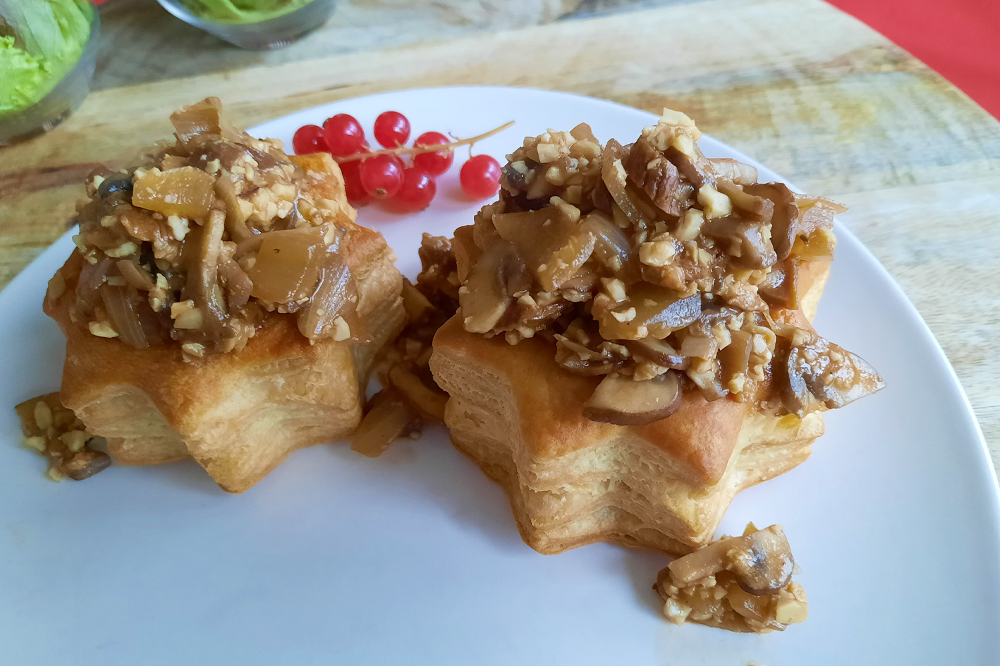

champignonragout
Lekker als vega variant.

Bereidingsduur: 90 minuten
Aantal personen: 3
Ingrediënten:
120 gram cashewnoten
1 ui
2 teentjes knoflook
500 gram kastanje champignons
7 gram porcini
250 milliliter groentebouillon
eventueel enkele eetlepels rode wijn
2 eetlepels tomatenpassata
1 theelepel tijm
1 theelepel sojasaus
olijfolie
naar smaak zwarte peper
7 pasteitjes
120 gram cashewnoten
1 ui
2 teentjes knoflook
500 gram kastanje champignons
7 gram porcini
250 milliliter groentebouillon
eventueel enkele eetlepels rode wijn
2 eetlepels tomatenpassata
1 theelepel tijm
1 theelepel sojasaus
olijfolie
naar smaak zwarte peper
7 pasteitjes
Instructies:
1. Kook water warm. Doe de porcini in een klein bakje en vul dit met het warme water tot de porcini net onder water staat. Laat dit ongeveer een uur staan. Laat de cashewnoten weken in wat water en maak de bouillon klaar.
2. Pak een blender en voeg de bouillon en de cashewnoten toe. Meng tot een gladde massa.
3. Snijd de ui en knoflook fijn en de champignons in halve schijfjes.
4. Vis de porcini uit het water en snijd fijn. Bewaar het weekvocht. Verhit olijfolie in een diepe pan en fruit hierin de ui en knoflook totdat deze zacht zijn. Voeg dan de champignons toe en kook op hoog vuur ongeveer 5 minuten. Blijf goed omroeren. Voeg dan de tijm toe en meng goed.
5. Verwarm de oven voor en bak hierin de pasteitjes. Voeg vervolgens de gesneden porcini, het weekvocht, passata, sojasaus en eventueel wat rode wijn toe aan de champignons. Roer goed door op hoog vuur.
6. Voeg daarna de cashewbasis toe aan de pan. Roer en laat op laag vuur koken tot het de gewenste dikte heeft. Breng op smaak met zwarte peper.
7. Serveer met de pasteitjes.
1. Kook water warm. Doe de porcini in een klein bakje en vul dit met het warme water tot de porcini net onder water staat. Laat dit ongeveer een uur staan. Laat de cashewnoten weken in wat water en maak de bouillon klaar.
2. Pak een blender en voeg de bouillon en de cashewnoten toe. Meng tot een gladde massa.
3. Snijd de ui en knoflook fijn en de champignons in halve schijfjes.
4. Vis de porcini uit het water en snijd fijn. Bewaar het weekvocht. Verhit olijfolie in een diepe pan en fruit hierin de ui en knoflook totdat deze zacht zijn. Voeg dan de champignons toe en kook op hoog vuur ongeveer 5 minuten. Blijf goed omroeren. Voeg dan de tijm toe en meng goed.
5. Verwarm de oven voor en bak hierin de pasteitjes. Voeg vervolgens de gesneden porcini, het weekvocht, passata, sojasaus en eventueel wat rode wijn toe aan de champignons. Roer goed door op hoog vuur.
6. Voeg daarna de cashewbasis toe aan de pan. Roer en laat op laag vuur koken tot het de gewenste dikte heeft. Breng op smaak met zwarte peper.
7. Serveer met de pasteitjes.